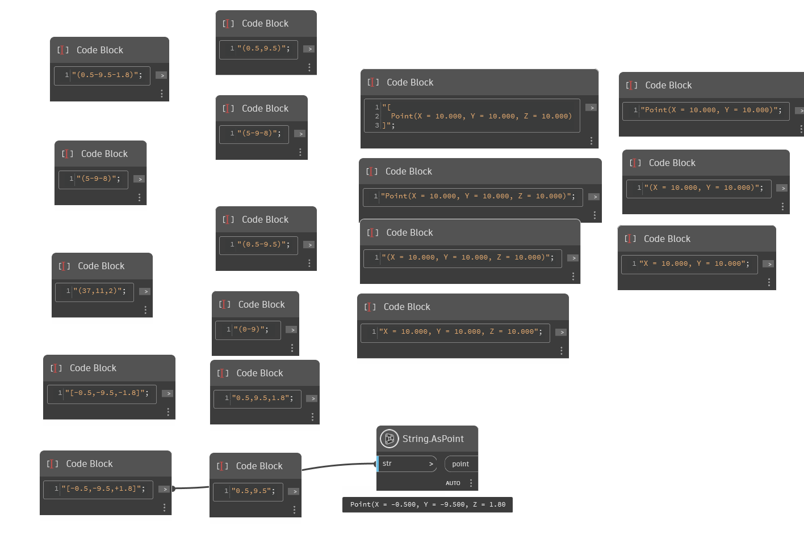
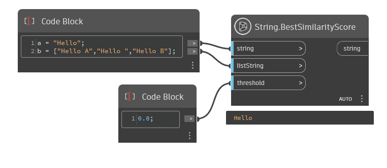
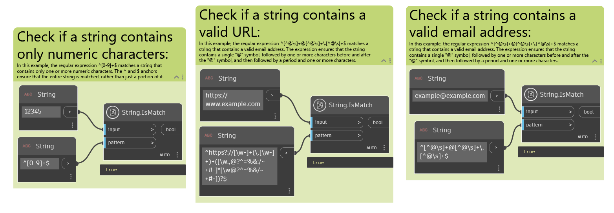
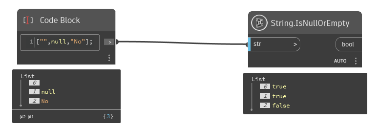
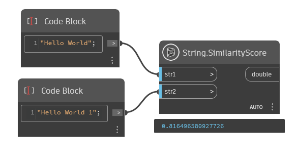

Class String
- Namespace
- OpenMEPSandbox.Core
- Assembly
- OpenMEPSandbox.dll
public class String- Inheritance
-
String
- Inherited Members
Methods
AsPoint(string)
Cast a string have point format to a point
public static Point? AsPoint(string str)Parameters
strstringstring point format
Returns
- Point
the point can cast
Examples

String.AsPoint.dynExceptions
BestSimilarityScore(string, List<string>, double)
Finds the most similar string to the input string from a list of strings, based on their similarity scores.
public static string BestSimilarityScore(string @string, List<string> listString, double threshold = 1)Parameters
stringstringThe input string to compare against the list of strings.
listStringList<string>The list of strings to compare the input string against.
thresholddoubleThe similarity threshold below which strings are considered similar.
Returns
- string
The most similar string from the list, or an empty string if inputString is null or listString is empty.
Examples

String.BestSimilarityScore.dynIsMatch(string, string)
Indicates whether the specified regular expression finds a match in the specified input string.
public static bool IsMatch(string input, string pattern)Parameters
inputstringThe string to search for a match.
patternstringThe regular expression pattern to match.
Returns
Examples

String.IsMatch.dynExceptions
- ArgumentException
A regular expression parsing error occurred.
- ArgumentNullException
inputorpatternis null.- RegexMatchTimeoutException
A time-out occurred. For more information about time-outs, see the Remarks section.
IsNullOrEmpty(string?)
Indicates whether the specified string is null or an empty string ("").
public static bool IsNullOrEmpty(string? value)Parameters
valuestringThe string to test.
Returns
Examples

String.IsNullOrEmpty.dynSimilarityScore(string, string)
Get Similarity Score between two strings
public static double SimilarityScore(string str1, string str2)Parameters
str1stringThe first input string to compare as a vector representation of term frequencies.
str2stringThe second input string to compare as a vector representation of term frequencies.
Returns
- double
The cosine similarity value between the two input strings.
Examples

String.SimilarityScore.dyn